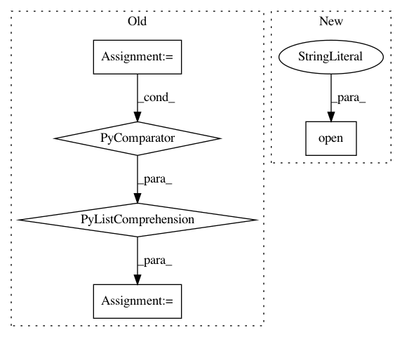

a1292078d2016dff4228fff869430ab4ace79b6b,astroML/datasets/sdss_corrected_spectra.py,,fetch_sdss_corrected_spectra,#,67
Before Change
buf = download_with_progress_bar(DATA_URL, return_buffer=True)
data = np.load(buf)
data_dict = dict([(key, data[key]) for key in data.files])
np.savez(archive_file, **data_dict)
else:
data = np.load(archive_file)
After Change
% (DATA_URL, data_home))
databuffer = download_with_progress_bar(DATA_URL)
open(data_file, "wb").write(databuffer)
data = np.load(data_file)
In pattern: SUPERPATTERN
Frequency: 4
Non-data size: 5
Instances
Project Name: astroML/astroML
Commit Name: a1292078d2016dff4228fff869430ab4ace79b6b
Time: 2019-01-04
Author: bsipocz@gmail.com
File Name: astroML/datasets/sdss_corrected_spectra.py
Class Name:
Method Name: fetch_sdss_corrected_spectra
Project Name: interactiveaudiolab/nussl
Commit Name: bc1ca6bc6d1c28c780e348321e8e95d5b3f91794
Time: 2019-07-15
Author: prem@u.northwestern.edu
File Name: nussl/deep/datasets/base_dataset.py
Class Name: BaseDataset
Method Name: switch_to_cache
Project Name: YerevaNN/mimic3-benchmarks
Commit Name: 5d353701dd56a1fc8abc15e4082e33b7bed2a241
Time: 2017-08-09
Author: harhro@gmail.com
File Name: mimic3models/split_train_val.py
Class Name:
Method Name:
Project Name: YerevaNN/mimic3-benchmarks
Commit Name: 7567cc646d258e40dde9790a28a9b264ccd494fb
Time: 2017-08-27
Author: harhro@gmail.com
File Name: mimic3models/split_train_val.py
Class Name:
Method Name: